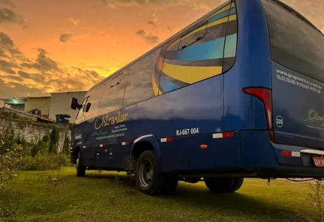
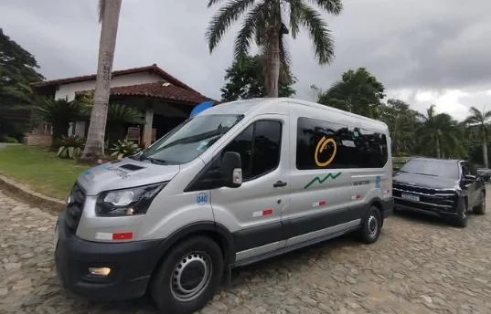
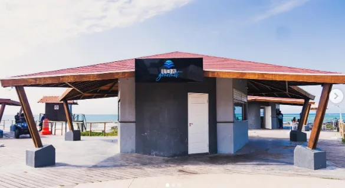
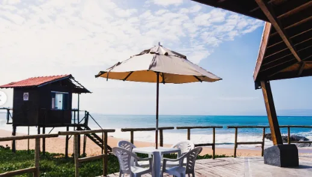
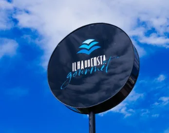

Fretamento, passeios e viagens em Rio das Ostras e Região
Frota própria de micro-ônibus, vans e carros executivos para fretamento, transfer e passeios na Região dos Lagos, e uma agência completa para planejar sua viagem do bilhete até a volta.
Transporte e fretamento em Rio das Ostras para todo o Sudeste
A Logix é o braço de transporte do Grupo Ostras. Atendemos empresas, escolas, igrejas, grupos e famílias com motoristas experientes e veículos revisados.
Fretamento de micro-ônibus e vans
Viagens de grupo, excursões, eventos e transporte de colaboradores com roteiro sob medida.
Saiba maisTransfer executivo
Conforto, pontualidade e discrição para executivos, clientes e convidados da sua empresa.
Saiba maisTraslado para aeroporto
Serviço in-out da origem ao destino, com horário agendado e atendimento em todo o estado do Rio.
Saiba maisPasseios e city tours
Roteiros por Rio das Ostras e Região dos Lagos, inclusive na nossa tradicional jardineira.
Saiba maisConheça os veículos que levam você com conforto e segurança
Micro-ônibus, vans, carros executivos e a tradicional jardineira, todos revisados e com motorista da casa.

Jardineira turística
City tour e passeios pela orla de Rio das Ostras.

Micro-ônibus
Fretamento para excursões, eventos e empresas.

Van executiva
Transfer executivo e traslado para aeroporto.
Carro executivo
Chevrolet Onix para transfer de até 4 passageiros.
5 motivos para viajar com quem conhece a estrada
MOTIVO 01
Desde 1995 no mercado. Começamos com um único veículo e hoje atendemos toda a Costa do Sol.
MOTIVO 02
Frota própria de micro-ônibus, vans, carros executivos e jardineira, sem terceirização do seu transporte.
MOTIVO 03
Motoristas treinados e veículos revisados, com foco total em segurança.
MOTIVO 04
Transporte e agência no mesmo lugar: você resolve passagem, hospedagem e traslado em um só lugar.
MOTIVO 05
Atendimento em todo o Sudeste, com orçamento rápido pelo WhatsApp.
Explore a Costa do Sol com quem conhece
Roteiros personalizados para turistas, grupos e excursões, com saída de Rio das Ostras ou da sua hospedagem.
Rio das Ostras
City tour pela orla, praias e pontos históricos.
Búzios
Praias, Rua das Pedras e Orla Bardot.
Arraial do Cabo
Águas cristalinas e passeio de barco.
Cabo Frio
Praia do Forte, dunas e canal.
Agência de viagens em Rio das Ostras para o Brasil e o exterior
A Ostrastur planeja sua viagem de férias ou de negócios e acompanha você da compra dos bilhetes até o retorno para casa.
Pacotes de viagem
Pacotes nacionais e internacionais montados conforme o seu orçamento e o seu estilo.
Passagens aéreas
Busca das melhores tarifas e suporte em remarcações e imprevistos.
Hospedagem e eventos
Consultoria de hospedagem para você, sua família ou os colaboradores da sua empresa.
trajetória
Mais de 30 anos de transporte com conforto e segurança
O começo
Em 1995, com a aquisição do primeiro veículo, a Ostrastur começou a operar passeios turísticos por Rio das Ostras e região.
A evolução
Ao longo dos anos, acompanhamos o mercado e ampliamos a operação para fretamento, transfer executivo e agenciamento de viagens.
O Grupo Ostras
Hoje o grupo reúne a Logix, a Brazilian Log, a Ostrastur, a Ilha do Costa Gourmet e o projeto Crucialta, sempre com foco na melhor experiência para o cliente.
Também fazem parte do Grupo Ostras

Crucialta: aulas de altinha em Rio das Ostras
Nascido em 2021, o Crucialta virou equipe de atletas e um estilo de vida: o Crucial no Flow. Oferecemos aulas mensais de altinha na Arena Beach Hub, em Costa Azul, além de clínicas, campeonatos e apresentações em escolas.
Quero fazer aula de altinhaIlha do Costa Gourmet
Onde a gastronomia encontra o mar.
O maior complexo de quiosques interligados e entretenimento da Costa do Sol fica em Rio das Ostras, de frente para o mar. Pratos preparados com sabor e qualidade, ambiente aconchegante e uma vista única para curtir com a família e os amigos.
Aberto de quarta a segunda, das 8h às 20h. Conheça a Ilha



Acompanhe nossas viagens no @ostrastur_
Destinos, pacotes e dicas de viagem direto do nosso perfil.
Perguntas sobre fretamento e viagens
A Logix faz fretamento para fora do Rio de Janeiro?
Sim. A Logix atende toda a Região Sudeste: Rio de Janeiro, Espírito Santo, Minas Gerais e São Paulo.
Quais veículos estão disponíveis para fretamento?
A frota própria conta com micro-ônibus, vans, carros executivos e a jardineira para passeios turísticos. O veículo é definido conforme o número de passageiros e o roteiro.
Vocês fazem traslado de Rio das Ostras para os aeroportos?
Sim. O traslado in-out atende os aeroportos do estado do Rio de Janeiro, com horário agendado.
Como faço um orçamento?
Preencha o formulário desta página ou chame no WhatsApp (22) 99217-3904 com origem, destino, data e número de passageiros.
Conte para onde você quer ir e a gente cuida do resto
Responderemos em poucos minutos pelo WhatsApp em horário comercial.
- WhatsApp: (22) 99217-3904
- Telefone Ostrastur: (22) 2764-5858
- E-mail: logistica@ostrastur.com.br
- Endereço: Rua João Viana, 117, Rio das Ostras (RJ)